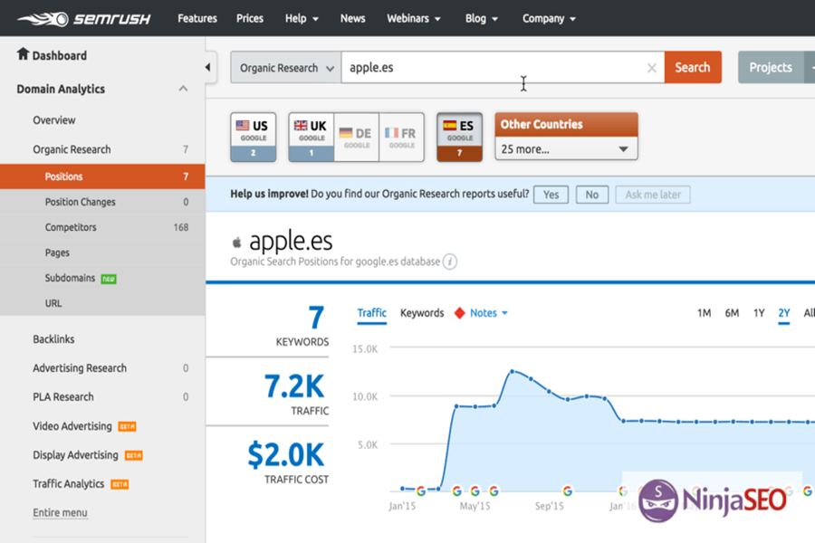
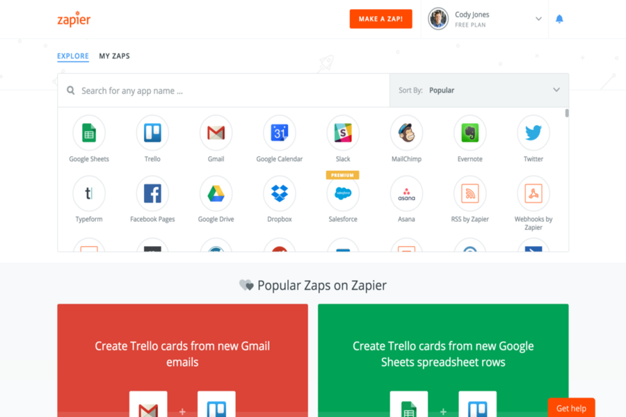

Herramientas SEO
De entre todas las posibles herramientas que existen para realizar SEO, vamos a destacar varias de ellas organizandolas según la función que realizan:
- Market Samurai: se trata de una herramienta multifunción para Windows y Mac. Entre otros incluye un módulo de monitorización de rankings automático, sencillo de usar y puedes trabajar con la mayoría de motores de búsqueda. Además es de pago único y las actualizaciones son gratuitas. En cambio, su interfaz no está en castellano y es un poco antiguo, ya que algunas funciones no resultan tan útiles como lo eran antes.
- SEMrush: Analiza las palabras clave de tu web y las de tus competidores. Es una herramienta muy potente tanto para el SEO como para el SEM (Search Engine Marketing), es decir, poder ser visualizado dentro de los primeros resultados de búsqueda (de forma gratuita o pagando). Te permite analizar y comparar tus datos con los de tus competidores, devolviendo informacion referida a su posicionamiento organico o natural, que es la ubicación o posición que ocupa una página o sitio web en el índice de resultados de un buscador cuando se introducen palabras clave. Además, entre otros, ofrece información acerca de número de resultados o el volumen y/o las tendencias de búsqueda. Aunque es de las más caras en relación a otras herramientas similares, es la más completa y posee más funcionalidades que las demás. 
- Webpagetest: analiza la velocidad de carga. Ofrece informes completos y detallados y, entre otros, comprueba la velocidad de carga en diferentes países, permitiendo simular la carga desde gran parte de los navegadores web y diferentes dispositivos móviles. No obstante, la versión de pago incluye 6 meses de actualizaciones gratis; después hay que suscribirse a un plan mensual.
- Google Analytics: probablemente la herramienta que más se usa para medir y analizar el tráfico y su conversión en visitas. Pese a que hay otras opciones, se trata de una herramienta muy completa que se integra con el resto de herramientas que ofrece Google, aunque no se trata de una herramienta intuitiva y sacar beneficio de su uso requiere bastante tiempo.
- Majestic: analiza el perfil de los enlaces en tu web, es decir, la calidad y la temática de un perfil de enlaces. Posee una gran base de datos que se actualiza con rapidez y ofrece métricas propias muy útiles para juzgar un perfil de enlaces. No obstante, su interfaz es poco atractiva y puede llegar a ser confusa.
- Google Search Console: anteriormente conocida como Google Webmasters Tool, nos permite analizar y optimizar nuestros sitios web. Entre otras funciones permite comprobar el estado de indexado de la web, permite visualizar la visibilidad en los resultados o incluso si has sido hackeado. No obstante, todos los datos que nos ofrece refieren a la página de Google, por lo que no ofrece resultados de otros navegadores
- SERPwatcher: herramienta para monitorizar los resultados de búsqueda en función de las palabras clave. Se trata de una herramienta online con una interfaz sencilla y elegante. Permite exportar las palabras clave, posee filtrado y etiquetado y genera informes automáticos de posicionamiento. No obstante, la interfaz no está en castellano y los datos hay que actualizarlos manualmente o ejecutando regularmente la herramienta.
- Zapier: Se trata de un automatizador de contenidos, es decir, permite automatizar tareas tales como responder y/o publicar automáticamente. Posee una versión gratuita (con limitaciones) bastante eficaz, pero su interfaz no está en castellano. 
- Buzzbundle: forma parte del conjunto de programas SEO powersuite, permite gestionar las actividades en las redes sociales. Es relativamente reciente y te permite gestionar tu popularidad y tu reputación, puedes programar en todas tus cuentas y te permite analizar tu competencia en redes sociales, teniendolo todo controlado. No obstante, su coste es más elevado que otras herramientas similares y no es tan útil en castellano como en inglés.